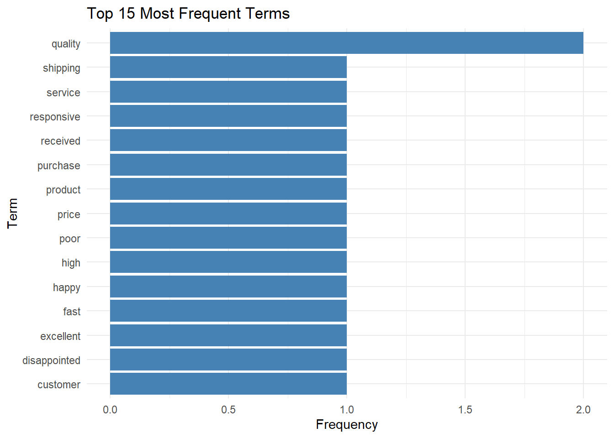
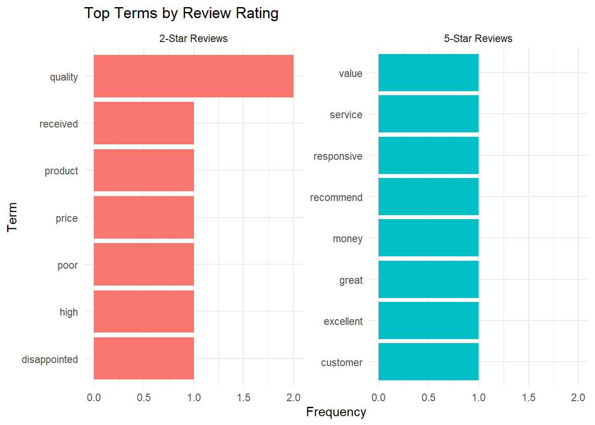
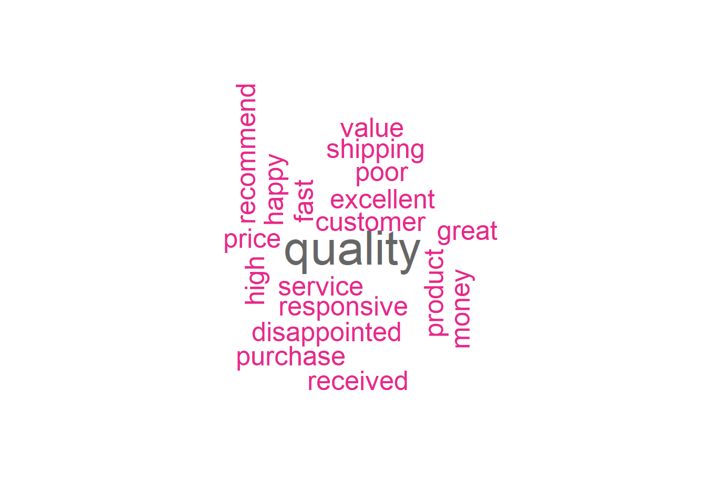
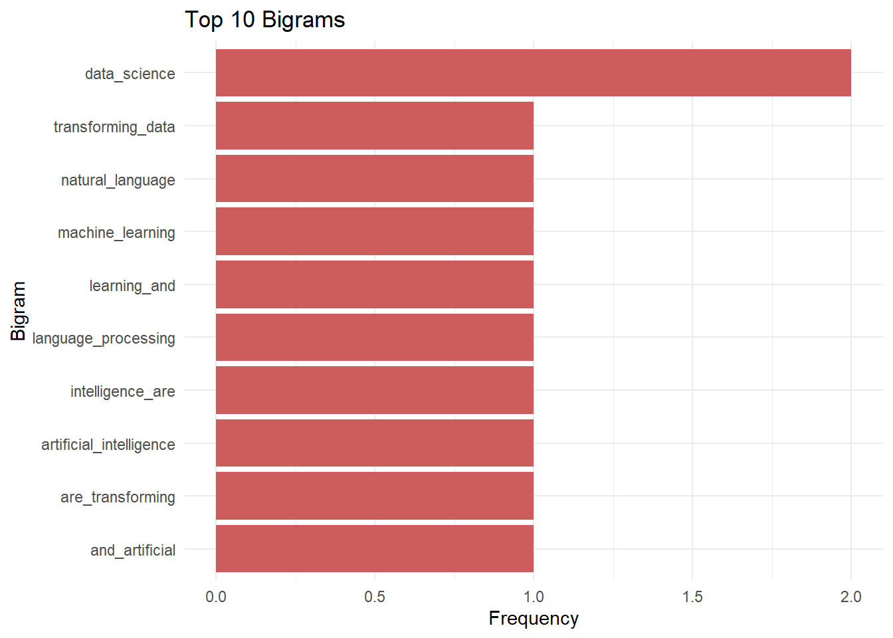
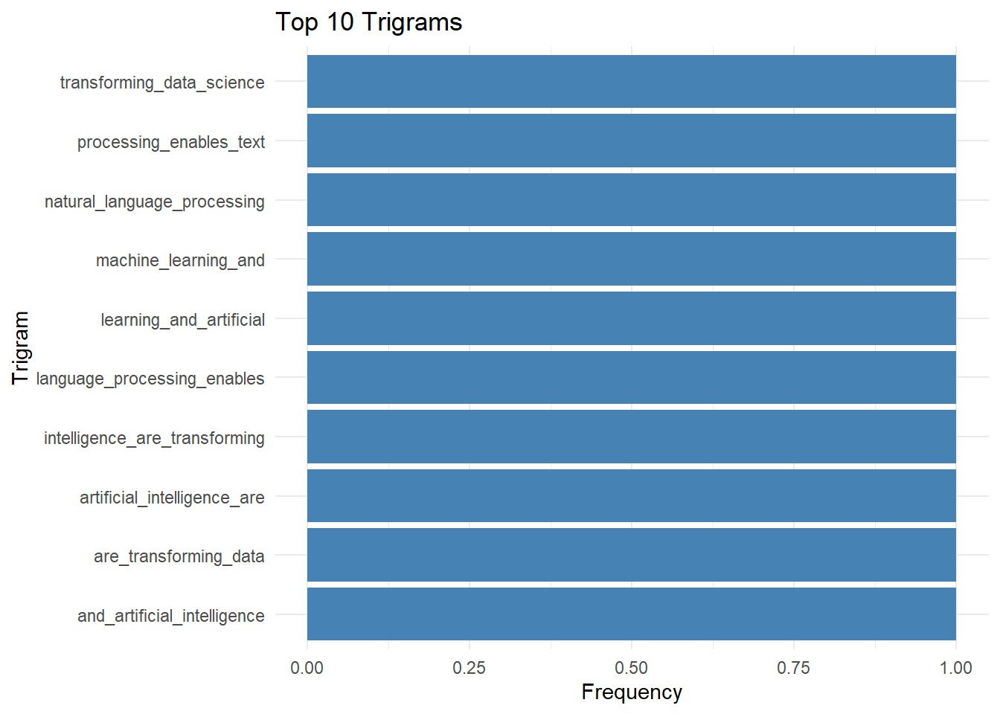
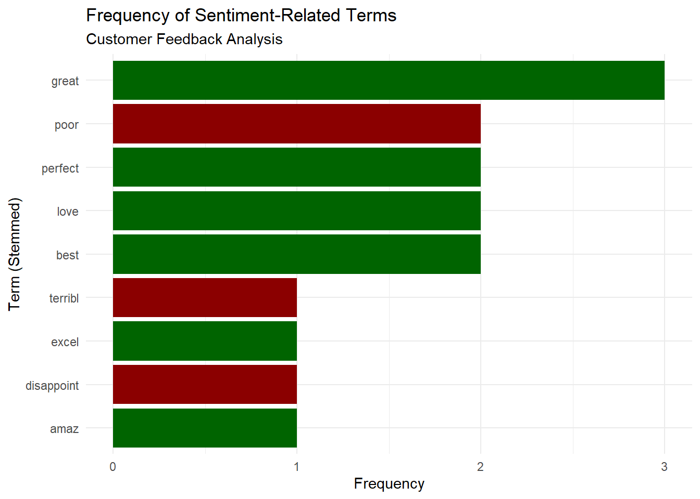
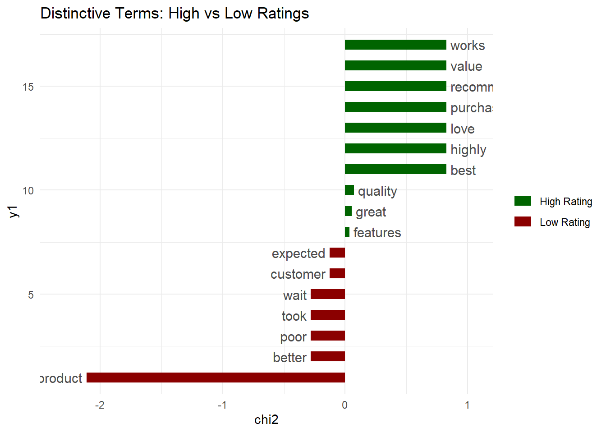
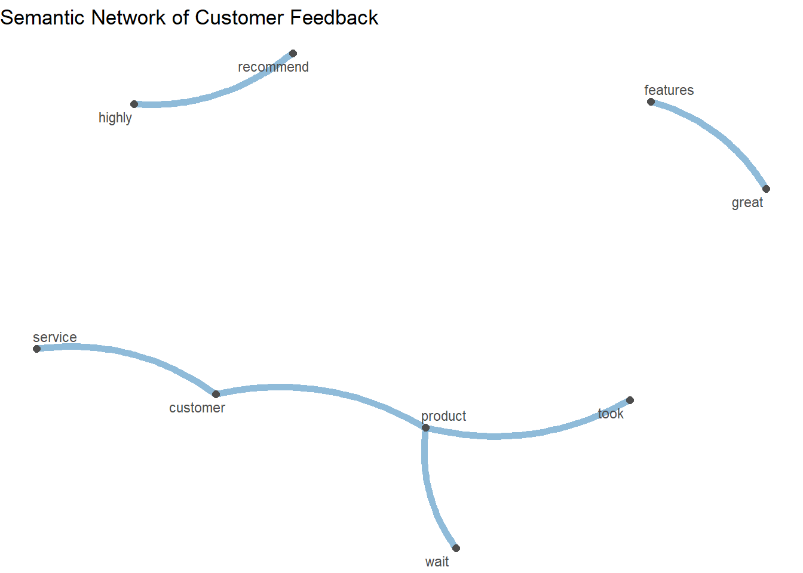

library(quanteda)
library(quanteda.textstats)
library(quanteda.textplots)
library(readr)
library(dplyr)
library(ggplot2)
library(stringr)
library(DT)
library(tidytext)Text Analytics in R with quanteda (Part 1)
R
Text Analytics
quanteda
NLP
Required Packages
Understanding Text Analytics Fundamentals
Text analytics transforms text into structured data suitable for analysis. A typical workflow looks like so:
- Text acquisition and loading: Importing text data from various sources
- Preprocessing: Cleaning and standardizing text
- Tokenization: Breaking text into meaningful units (words, sentences, n-grams)
- Document-Feature Matrix (DFM) creation: Representing text numerically
- Analysis: Extracting insights through statistical and computational methods
Creating a Corpus: Prepping data for analysis
A corpus is a structured collection of texts. quanteda provides the corpus() function to create corpus objects from various data sources.
Example 1: Simple Corpus from Character Vector
# Create a simple corpus from a character vector
texts <- c(
"The quick brown fox jumps over the lazy dog.",
"Natural language processing is fascinating and powerful.",
"Text analytics enables data-driven decision making.",
"Machine learning algorithms can analyze text at scale.",
"Data science combines statistics, programming, and domain knowledge."
)
# Create corpus
corp <- corpus(texts)
# Examine the corpus
summary(corp)Corpus consisting of 5 documents, showing 5 documents:
Text Types Tokens Sentences
text1 10 10 1
text2 8 8 1
text3 7 7 1
text4 9 9 1
text5 10 11 1Example 2: Corpus from Data Frame
In practice, text data typically comes with associated metadata (e.g., author, date, category). quanteda handles this well:
# Create a data frame with text and metadata
text_df <- data.frame(
text = c(
"Customer service was excellent and responsive.",
"Product quality is poor. Very disappointed.",
"Shipping was fast. Happy with my purchase.",
"Price is too high for the quality received.",
"Great value for money. Would recommend!"
),
rating = c(5, 2, 4, 2, 5),
product_category = c("Electronics", "Clothing", "Electronics", "Clothing", "Electronics"),
review_date = as.Date(c("2025-01-15", "2025-02-20", "2025-03-10", "2025-04-05", "2025-05-12")),
stringsAsFactors = FALSE
)
datatable(text_df)# Create corpus from data frame
reviews_corp <- corpus(text_df, text_field = "text")
# Examine corpus with metadata
summary(reviews_corp)Corpus consisting of 5 documents, showing 5 documents:
Text Types Tokens Sentences rating product_category review_date
text1 7 7 1 5 Electronics 2025-01-15
text2 7 8 2 2 Clothing 2025-02-20
text3 8 9 2 4 Electronics 2025-03-10
text4 9 9 1 2 Clothing 2025-04-05
text5 8 8 2 5 Electronics 2025-05-12# Access document variables (metadata) (columns not declared as "text_field")
docvars(reviews_corp) rating product_category review_date
1 5 Electronics 2025-01-15
2 2 Clothing 2025-02-20
3 4 Electronics 2025-03-10
4 2 Clothing 2025-04-05
5 5 Electronics 2025-05-12# Subset corpus by metadata
high_rated <- corpus_subset(reviews_corp, rating >= 4)
summary(high_rated)Corpus consisting of 3 documents, showing 3 documents:
Text Types Tokens Sentences rating product_category review_date
text1 7 7 1 5 Electronics 2025-01-15
text3 8 9 2 4 Electronics 2025-03-10
text5 8 8 2 5 Electronics 2025-05-12Tokenization: Breaking text into units
Tokenization is the process of splitting text into individual units (tokens), typically words. The tokens() function provides lots of tokenisation capabilities.
Basic Tokenization
# Tokenize the reviews corpus
toks <- tokens(reviews_corp)
# View tokens from all documents
print(toks)Tokens consisting of 5 documents and 3 docvars.
text1 :
[1] "Customer" "service" "was" "excellent" "and"
[6] "responsive" "."
text2 :
[1] "Product" "quality" "is" "poor" "."
[6] "Very" "disappointed" "."
text3 :
[1] "Shipping" "was" "fast" "." "Happy" "with" "my"
[8] "purchase" "."
text4 :
[1] "Price" "is" "too" "high" "for" "the" "quality"
[8] "received" "."
text5 :
[1] "Great" "value" "for" "money" "." "Would"
[7] "recommend" "!" Advanced Tokenization Options
quanteda offers a lot of control over tokenization:
# Create sample text with various elements
sample_text <- "Dr. Smith's email is john.smith@example.com.
He earned $100,000 in 2024! Visit https://example.com
for more info. #DataScience #AI"
sample_corp <- corpus(sample_text)
# Different tokenization approaches
tokens_default <- tokens(sample_corp)
tokens_no_punct <- tokens(sample_corp, remove_punct = TRUE)
tokens_no_numbers <- tokens(sample_corp, remove_numbers = TRUE)
tokens_no_symbols <- tokens(sample_corp, remove_symbols = TRUE)
tokens_lowercase <- tokens(sample_corp, remove_punct = TRUE) %>% tokens_tolower()
# Compare results
print(tokens_default)Tokens consisting of 1 document.
text1 :
[1] "Dr" "." "Smith's"
[4] "email" "is" "john.smith@example.com"
[7] "." "He" "earned"
[10] "$" "100,000" "in"
[ ... and 10 more ]print(tokens_no_punct)Tokens consisting of 1 document.
text1 :
[1] "Dr" "Smith's" "email"
[4] "is" "john.smith@example.com" "He"
[7] "earned" "$" "100,000"
[10] "in" "2024" "Visit"
[ ... and 6 more ]print(tokens_no_numbers)Tokens consisting of 1 document.
text1 :
[1] "Dr" "." "Smith's"
[4] "email" "is" "john.smith@example.com"
[7] "." "He" "earned"
[10] "$" "in" "!"
[ ... and 8 more ]print(tokens_no_symbols)Tokens consisting of 1 document.
text1 :
[1] "Dr" "." "Smith's"
[4] "email" "is" "john.smith@example.com"
[7] "." "He" "earned"
[10] "100,000" "in" "2024"
[ ... and 9 more ]print(tokens_lowercase)Tokens consisting of 1 document.
text1 :
[1] "dr" "smith's" "email"
[4] "is" "john.smith@example.com" "he"
[7] "earned" "$" "100,000"
[10] "in" "2024" "visit"
[ ... and 6 more ]Stopword Removal
Stopwords are common words (e.g., “the”, “is”, “at”) that typically don’t carry significant meaning. Removing them reduces noise and improves ovrerall efficiency.
# View built-in English stopwords (first 20)
head(stopwords("english"), 20) [1] "i" "me" "my" "myself" "we"
[6] "our" "ours" "ourselves" "you" "your"
[11] "yours" "yourself" "yourselves" "he" "him"
[16] "his" "himself" "she" "her" "hers" # Count of English stopwords
length(stopwords("english"))[1] 175# Remove stopwords from tokens
toks_no_stop <- tokens(reviews_corp,
remove_punct = TRUE,
remove_numbers = TRUE) %>%
tokens_tolower() %>%
tokens_remove(stopwords("english"))
# Compare with and without stopwords
print(tokens(reviews_corp, remove_punct = TRUE)[1])Tokens consisting of 1 document and 3 docvars.
text1 :
[1] "Customer" "service" "was" "excellent" "and"
[6] "responsive"print(toks_no_stop[1])Tokens consisting of 1 document and 3 docvars.
text1 :
[1] "customer" "service" "excellent" "responsive"# Count tokens before and after
print(ntoken(tokens(reviews_corp, remove_punct = TRUE)))text1 text2 text3 text4 text5
6 6 7 8 6 print(ntoken(toks_no_stop))text1 text2 text3 text4 text5
4 4 4 4 4 Stemming
Stemming reduces words to their root form by removing suffixes (e.g., “running” → “run”).
# Example text demonstrating word variations
stem_text <- c(
"The running runners ran faster than expected.",
"Computing computers computed complex calculations.",
"The analyst analyzed analytical data using analysis techniques."
)
stem_corp <- corpus(stem_text)
# Tokenize
stem_toks <- tokens(stem_corp, remove_punct = TRUE) %>% tokens_tolower()
# Apply stemming
stem_toks_stemmed <- tokens_wordstem(stem_toks)
# Compare original and stemmed
print(stem_toks[1])Tokens consisting of 1 document.
text1 :
[1] "the" "running" "runners" "ran" "faster" "than" "expected"print(stem_toks_stemmed[1])Tokens consisting of 1 document.
text1 :
[1] "the" "run" "runner" "ran" "faster" "than" "expect"Document-Feature Matrix (DFM): Numerical Representation
A Document-Feature Matrix (DFM) is a numerical representation of text where rows represent documents, columns represent features (typically words), and cell values indicate feature frequency in each document. This structure enables statistical analysis and machine learning applications.
# Create a DFM from our reviews corpus
reviews_dfm <- reviews_corp %>%
tokens(remove_punct = TRUE, remove_numbers = TRUE) %>%
tokens_tolower() %>%
tokens_remove(stopwords("english")) %>%
dfm()
# Examine the DFM
print(reviews_dfm)Document-feature matrix of: 5 documents, 19 features (78.95% sparse) and 3 docvars.
features
docs customer service excellent responsive product quality poor disappointed
text1 1 1 1 1 0 0 0 0
text2 0 0 0 0 1 1 1 1
text3 0 0 0 0 0 0 0 0
text4 0 0 0 0 0 1 0 0
text5 0 0 0 0 0 0 0 0
features
docs shipping fast
text1 0 0
text2 0 0
text3 1 1
text4 0 0
text5 0 0
[ reached max_nfeat ... 9 more features ]# View DFM dimensions
print(dim(reviews_dfm))[1] 5 19Feature Statistics: Understanding Word Frequencies
Analyzing feature frequencies reveals the most important terms in the corpus.
# Calculate feature frequencies
feat_freq <- textstat_frequency(reviews_dfm)
# View top features
head(feat_freq, 15) feature frequency rank docfreq group
1 quality 2 1 2 all
2 customer 1 2 1 all
3 service 1 2 1 all
4 excellent 1 2 1 all
5 responsive 1 2 1 all
6 product 1 2 1 all
7 poor 1 2 1 all
8 disappointed 1 2 1 all
9 shipping 1 2 1 all
10 fast 1 2 1 all
11 happy 1 2 1 all
12 purchase 1 2 1 all
13 price 1 2 1 all
14 high 1 2 1 all
15 received 1 2 1 all# Visualize top features
feat_freq %>%
head(15) %>%
ggplot(aes(x = reorder(feature, frequency), y = frequency)) +
geom_col(fill = "steelblue") +
coord_flip() +
labs(title = "Top 15 Most Frequent Terms",
x = "Term",
y = "Frequency") +
theme_minimal()
Group-Based Feature Analysis
Analyzing features by groups (e.g., high vs. low ratings) reveals distinctive vocabulary:
# Group DFM by rating category
reviews_dfm_grouped <- reviews_corp %>%
tokens(remove_punct = TRUE, remove_numbers = TRUE) %>%
tokens_tolower() %>%
tokens_remove(stopwords("english")) %>%
dfm() %>%
dfm_group(groups = rating)
# Calculate frequencies by group
freq_by_rating <- textstat_frequency(reviews_dfm_grouped, groups = rating)
# View top features for each rating
print(freq_by_rating %>% filter(group == 5) %>% head(10)) feature frequency rank docfreq group
12 customer 1 1 1 5
13 service 1 1 1 5
14 excellent 1 1 1 5
15 responsive 1 1 1 5
16 great 1 1 1 5
17 value 1 1 1 5
18 money 1 1 1 5
19 recommend 1 1 1 5print(freq_by_rating %>% filter(group == 2) %>% head(10)) feature frequency rank docfreq group
1 quality 2 1 1 2
2 product 1 2 1 2
3 poor 1 2 1 2
4 disappointed 1 2 1 2
5 price 1 2 1 2
6 high 1 2 1 2
7 received 1 2 1 2# Visualize comparison
freq_by_rating %>%
filter(group %in% c(2, 5)) %>%
group_by(group) %>%
slice_max(frequency, n = 8) %>%
ungroup() %>%
mutate(feature = reorder_within(feature, frequency, group)) %>%
ggplot(aes(x = feature, y = frequency, fill = factor(group))) +
geom_col(show.legend = FALSE) +
facet_wrap(~ group, scales = "free_y", labeller = labeller(group = c("2" = "2-Star Reviews", "5" = "5-Star Reviews"))) +
scale_x_reordered() +
coord_flip() +
labs(title = "Top Terms by Review Rating",
x = "Term",
y = "Frequency") +
theme_minimal()
Word Clouds: Visual Exploration
Word clouds provide intuitive visualization of term frequencies:
# Create word cloud
set.seed(123)
textplot_wordcloud(reviews_dfm,
min_count = 1,
max_words = 50,
rotation = 0.25,
color = RColorBrewer::brewer.pal(8, "Dark2"))
N-grams: Multi-Word Expressions
N-grams are contiguous sequences of n tokens. Bigrams (2-grams) and trigrams (3-grams) capture multi-word expressions and phrases that single words miss.
# Create sample text for n-gram analysis
ngram_text <- c(
"Machine learning and artificial intelligence are transforming data science.",
"Natural language processing enables text analytics at scale.",
"Deep learning models achieve state of the art results.",
"Data science requires domain knowledge and technical skills.",
"Text mining extracts insights from unstructured data."
)
ngram_corp <- corpus(ngram_text)
# Create bigrams
bigrams <- ngram_corp %>%
tokens(remove_punct = TRUE) %>%
tokens_tolower() %>%
tokens_ngrams(n = 2) %>%
dfm()
# Calculate bigram frequencies
bigram_freq <- textstat_frequency(bigrams)
head(bigram_freq, 15) feature frequency rank docfreq group
1 data_science 2 1 2 all
2 machine_learning 1 2 1 all
3 learning_and 1 2 1 all
4 and_artificial 1 2 1 all
5 artificial_intelligence 1 2 1 all
6 intelligence_are 1 2 1 all
7 are_transforming 1 2 1 all
8 transforming_data 1 2 1 all
9 natural_language 1 2 1 all
10 language_processing 1 2 1 all
11 processing_enables 1 2 1 all
12 enables_text 1 2 1 all
13 text_analytics 1 2 1 all
14 analytics_at 1 2 1 all
15 at_scale 1 2 1 all# Visualize top bigrams
bigram_freq %>%
head(10) %>%
ggplot(aes(x = reorder(feature, frequency), y = frequency)) +
geom_col(fill = "indianred") +
coord_flip() +
labs(title = "Top 10 Bigrams",
x = "Bigram",
y = "Frequency") +
theme_minimal()
# Create trigrams
trigrams <- ngram_corp %>%
tokens(remove_punct = TRUE) %>%
tokens_tolower() %>%
tokens_ngrams(n = 3) %>%
dfm()
# Calculate trigram frequencies
trigram_freq <- textstat_frequency(trigrams)
# Visualize top bigrams
trigram_freq %>%
head(10) %>%
ggplot(aes(x = reorder(feature, frequency), y = frequency)) +
geom_col(fill = "steelblue") +
coord_flip() +
labs(title = "Top 10 Trigrams",
x = "Trigram",
y = "Frequency") +
theme_minimal()
Real-World Example: Analyzing Customer Feedback
Let’s try and apply these techniques to a more realistic scenario.
# Create a realistic customer feedback dataset
set.seed(456)
feedback_df <- data.frame(
text = c(
"Absolutely love this product! Best purchase I've made all year. Quality is outstanding.",
"Terrible experience. Product broke after one week. Customer service was unhelpful.",
"Good value for the price. Works as expected. Would buy again.",
"Shipping took forever. Product is okay but not worth the wait.",
"Amazing quality and fast delivery. Highly recommend to everyone!",
"Product description was misleading. Not what I expected at all.",
"Decent product but customer support needs improvement. Long wait times.",
"Exceeded my expectations! Great features and easy to use.",
"Poor quality control. Received damaged item. Return process was difficult.",
"Perfect! Exactly what I needed. Five stars all around.",
"Overpriced for what you get. Better alternatives available elsewhere.",
"Good product but instructions were confusing. Setup took hours.",
"Love it! Works perfectly and looks great too.",
"Not satisfied. Product feels cheap and flimsy.",
"Best customer service ever! They resolved my issue immediately.",
"Average product. Nothing special but gets the job done.",
"Fantastic! Will definitely purchase from this company again.",
"Disappointed with the quality. Expected much better.",
"Great features but battery life is poor.",
"Excellent value. Highly recommend for budget shoppers."
),
rating = c(5, 1, 4, 2, 5, 1, 3, 5, 1, 5, 2, 3, 5, 2, 5, 3, 5, 2, 3, 4),
category = sample(c("Electronics", "Home & Kitchen", "Clothing"), 20, replace = TRUE),
helpful_votes = sample(0:50, 20, replace = TRUE),
stringsAsFactors = FALSE
)
# Create corpus
feedback_corp <- corpus(feedback_df, text_field = "text")
# Complete preprocessing pipeline
feedback_dfm <- feedback_corp %>%
tokens(remove_punct = TRUE,
remove_numbers = TRUE,
remove_symbols = TRUE) %>%
tokens_tolower() %>%
tokens_remove(stopwords("english")) %>%
tokens_wordstem() %>%
dfm()
# Analyze overall sentiment-related terms
sentiment_terms <- c("love", "best", "great", "excel", "amaz", "perfect",
"terribl", "poor", "worst", "disappoint", "bad")
sentiment_dfm <- dfm_select(feedback_dfm, pattern = sentiment_terms)
# Calculate sentiment term frequencies
sentiment_freq <- textstat_frequency(sentiment_dfm)
# Visualize sentiment terms
ggplot(sentiment_freq, aes(x = reorder(feature, frequency), y = frequency)) +
geom_col(aes(fill = feature), show.legend = FALSE) +
coord_flip() +
labs(title = "Frequency of Sentiment-Related Terms",
subtitle = "Customer Feedback Analysis",
x = "Term (Stemmed)",
y = "Frequency") +
theme_minimal() +
scale_fill_manual(values = c(
"love" = "darkgreen", "best" = "darkgreen", "great" = "darkgreen",
"excel" = "darkgreen", "amaz" = "darkgreen", "perfect" = "darkgreen",
"terribl" = "darkred", "poor" = "darkred", "worst" = "darkred",
"disappoint" = "darkred", "bad" = "darkred"
))
# Compare high vs low-rated reviews
# Create a rating category variable
rating_category <- ifelse(docvars(feedback_corp, "rating") >= 4, "High Rating", "Low Rating")
feedback_grouped <- feedback_corp %>%
tokens(remove_punct = TRUE, remove_numbers = TRUE) %>%
tokens_tolower() %>%
tokens_remove(stopwords("english")) %>%
dfm() %>%
dfm_group(groups = rating_category)
# Calculate keyness (distinctive terms)
keyness_stats <- textstat_keyness(feedback_grouped, target = "High Rating")
# Visualize keyness
textplot_keyness(keyness_stats, n = 10, color = c("darkgreen", "darkred")) +
labs(title = "Distinctive Terms: High vs Low Ratings") +
theme_minimal()
Document Similarity Analysis
Understanding document similarity is crucial for tasks like duplicate detection, document clustering, and recommendation systems:
# Use the preprocessed DFM for better similarity measurement
feedback_dfm_clean <- feedback_corp %>%
tokens(remove_punct = TRUE, remove_numbers = TRUE) %>%
tokens_tolower() %>%
tokens_remove(stopwords("english")) %>%
tokens_wordstem() %>%
dfm()
# Calculate document similarity using cosine similarity
doc_similarity <- textstat_simil(feedback_dfm_clean,
method = "cosine",
margin = "documents")
# Find most similar documents to first review (a positive review)
similarity_df <- as.data.frame(as.matrix(doc_similarity))
similarity_to_doc1 <- sort(as.numeric(similarity_df[1, ]), decreasing = TRUE)[2:6] # Skip first (itself)
# First review document
as.character(feedback_corp)[1] text1
"Absolutely love this product! Best purchase I've made all year. Quality is outstanding." # Top 3 similar documents
for(i in 2:4) {
doc_idx <- order(as.numeric(similarity_df[1, ]), decreasing = TRUE)[i]
cat("\nDocument", doc_idx, "(Similarity:", round(similarity_df[1, doc_idx], 3), "):\n")
cat(as.character(feedback_corp)[doc_idx], "\n")
}
Document 6 (Similarity: 0.167 ):
Product description was misleading. Not what I expected at all.
Document 17 (Similarity: 0.167 ):
Fantastic! Will definitely purchase from this company again.
Document 13 (Similarity: 0.149 ):
Love it! Works perfectly and looks great too. It is worth noting that cosine similarity alone might not be enough since the top most similar document does not match the document’s sentiment.
Sentiment-Aware Similarity
To improve similarity assessment we can incorporate sentiment. Let’s add sentiment score as a feature.
# Define positive and negative sentiment lexicons
positive_words <- c("love", "best", "great", "excellent", "amazing", "perfect",
"fantastic", "outstanding", "happy", "wonderful", "superb")
negative_words <- c("terrible", "poor", "worst", "disappointing", "bad", "awful",
"horrible", "useless", "disappointed", "misleading", "cheap")
# Create tokens
feedback_toks <- feedback_corp %>%
tokens(remove_punct = TRUE, remove_numbers = TRUE) %>%
tokens_tolower() %>%
tokens_remove(stopwords("english"))
# Calculate sentiment scores for each document
sentiment_scores <- sapply(feedback_toks, function(doc_tokens) {
pos_count <- sum(doc_tokens %in% positive_words)
neg_count <- sum(doc_tokens %in% negative_words)
# Net sentiment score
(pos_count - neg_count) / length(doc_tokens)
})
# Create DFM with sentiment features
feedback_dfm_sentiment <- feedback_toks %>%
tokens_wordstem() %>%
dfm()
# Add sentiment score as a weighted feature
# Create a sentiment feature by replicating the sentiment score
sentiment_feature_matrix <- matrix(sentiment_scores * 10, # Scale up for visibility
nrow = ndoc(feedback_dfm_sentiment),
ncol = 1,
dimnames = list(docnames(feedback_dfm_sentiment),
"SENTIMENT_SCORE"))
# Combine with original DFM
feedback_dfm_with_sentiment <- cbind(feedback_dfm_sentiment, sentiment_feature_matrix)
# Calculate similarity with sentiment
doc_similarity_sentiment <- textstat_simil(feedback_dfm_with_sentiment,
method = "cosine",
margin = "documents")
# Compare results
similarity_df_sentiment <- as.data.frame(as.matrix(doc_similarity_sentiment))
#Standard vs Sentiment-Aware Similarity
# First document
cat(as.character(feedback_corp)[1], "\n")Absolutely love this product! Best purchase I've made all year. Quality is outstanding. # Sentiment-aware similarity
for(i in 2:4) {
doc_idx <- order(as.numeric(similarity_df_sentiment[1, ]), decreasing = TRUE)[i]
cat("\nDocument", doc_idx, "(Similarity:", round(similarity_df_sentiment[1, doc_idx], 3), "):\n")
cat(as.character(feedback_corp)[doc_idx], "\n")
cat("Rating:", docvars(feedback_corp, "rating")[doc_idx],
"| Sentiment:", round(sentiment_scores[doc_idx], 3), "\n")
}
Document 13 (Similarity: 0.697 ):
Love it! Works perfectly and looks great too.
Rating: 5 | Sentiment: 0.4
Document 17 (Similarity: 0.65 ):
Fantastic! Will definitely purchase from this company again.
Rating: 5 | Sentiment: 0.25
Document 5 (Similarity: 0.427 ):
Amazing quality and fast delivery. Highly recommend to everyone!
Rating: 5 | Sentiment: 0.143 Feature Co-occurrence Analysis
Understanding which words frequently appear together can help reveal semantic relationships.
# Create feature co-occurrence matrix
fcm <- feedback_corp %>%
tokens(remove_punct = TRUE) %>%
tokens_tolower() %>%
tokens_remove(stopwords("english")) %>%
fcm()
# View top co-occurrences
feat_cooc <- fcm[1:20, 1:20]
# Visualize semantic network
set.seed(123)
textplot_network(fcm,
min_freq = 2,
edge_alpha = 0.5,
edge_size = 2,
vertex_labelsize = 3) +
labs(title = "Semantic Network of Customer Feedback")
DFM Manipulation and Transformation
quanteda provides powerful functions for manipulating DFMs:
# Trim DFM to remove rare and very common features
feedback_dfm_trimmed <- dfm_trim(feedback_dfm,
min_termfreq = 2, # Remove terms appearing < 2 times
max_docfreq = 0.8, # Remove terms in > 80% of docs
docfreq_type = "prop")
# Original DFM dimensions
print(dim(feedback_dfm))[1] 20 95# Trimmed DFM dimensions
print(dim(feedback_dfm_trimmed))[1] 20 22# Weight DFM using TF-IDF
feedback_tfidf <- dfm_tfidf(feedback_dfm_trimmed)
# Top features by TF-IDF
tfidf_freq <- textstat_frequency(feedback_tfidf, force = T)
print(head(tfidf_freq, 15)) feature frequency rank docfreq group
1 product 3.183520 1 8 all
2 qualiti 2.795880 2 4 all
3 expect 2.795880 2 4 all
4 custom 2.471726 4 3 all
5 great 2.471726 4 3 all
6 love 2.000000 6 2 all
7 best 2.000000 6 2 all
8 purchas 2.000000 6 2 all
9 servic 2.000000 6 2 all
10 good 2.000000 6 2 all
11 valu 2.000000 6 2 all
12 work 2.000000 6 2 all
13 took 2.000000 6 2 all
14 wait 2.000000 6 2 all
15 high 2.000000 6 2 all# Select specific features
service_terms <- c("service", "support", "help", "response", "customer")
service_dfm <- dfm_select(feedback_dfm, pattern = service_terms)
# Frequency of service related terms
print(colSums(service_dfm))support
1 # Remove specific features
filtered_dfm <- dfm_remove(feedback_dfm, pattern = c("product", "item"))
# Original feature count
nfeat(feedback_dfm)[1] 95# Filtered feature count
nfeat(filtered_dfm)[1] 93